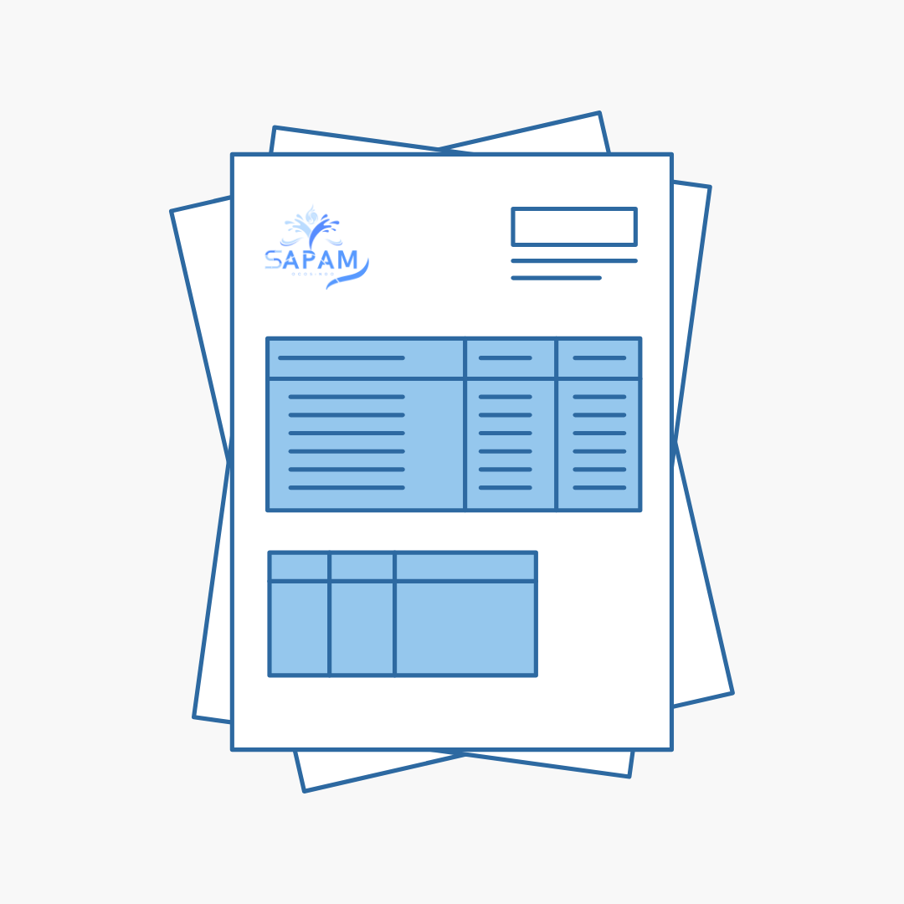

Servicios del SAPAM Ocosingo
En SAPAM Ocosingo ofrecemos servicios esenciales para el bienestar de la comunidad, enfocados en el suministro de agua, saneamiento y cultura del agua.
Agua Potable
Suministro y distribución de agua potable para todos los hogares y negocios del municipio.

Mantenimiento
Reparación de fugas, atención a reportes y mantenimiento constante de la red hidráulica.

Facturación
Emisión y cobro de recibos de agua de manera clara y transparente.

Cultura del Agua
Capacitaciones, talleres y campañas para promover el uso responsable del agua.